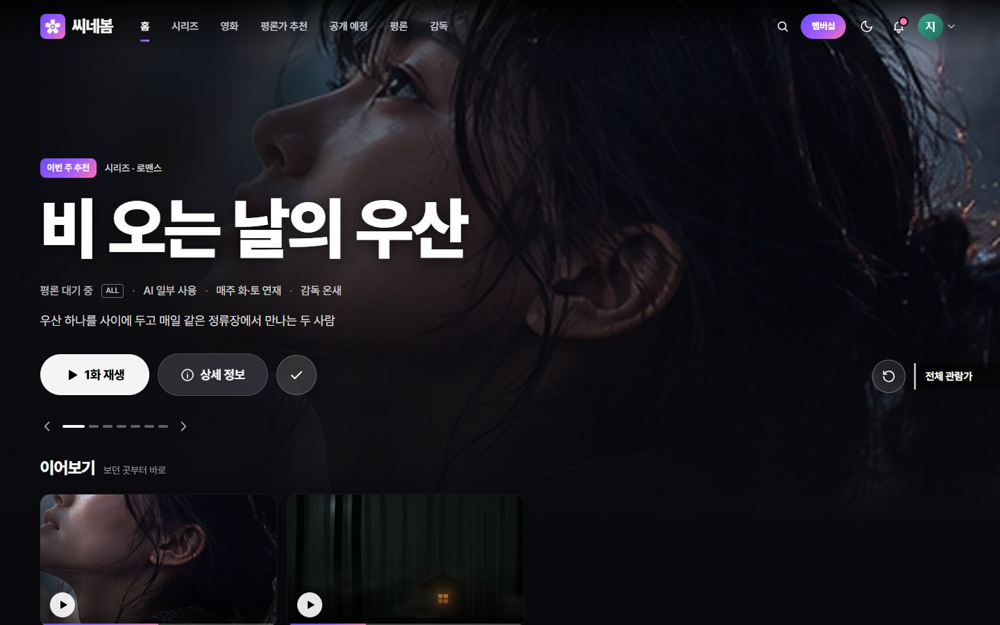
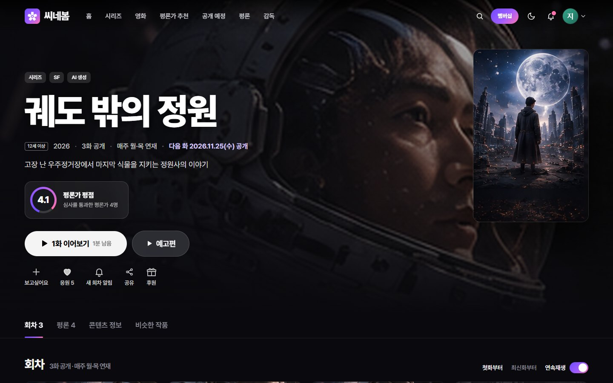
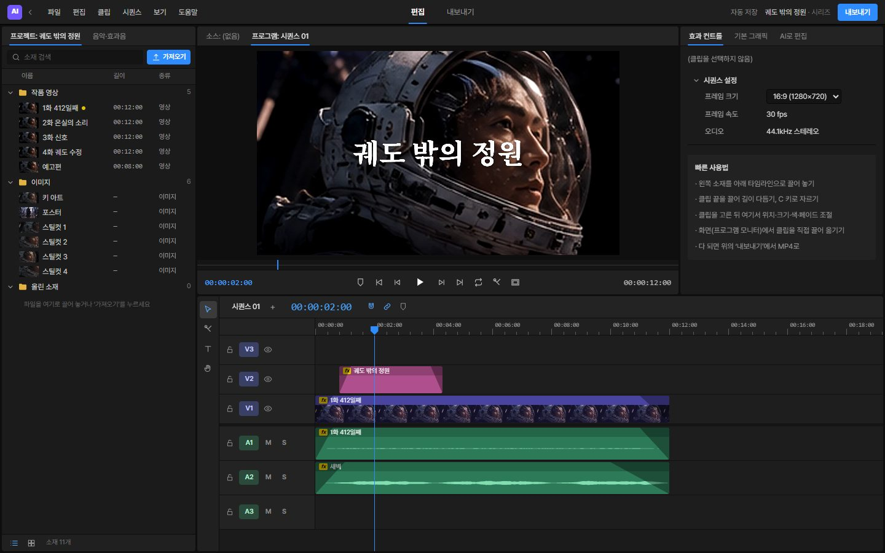
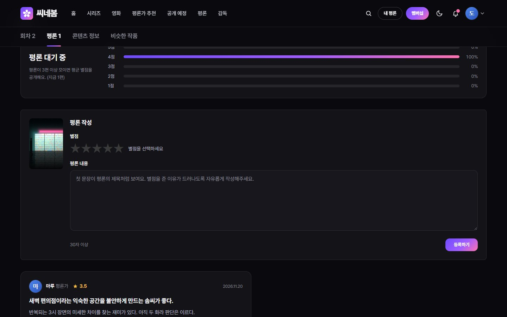

감독은 완성도로 올라갑니다
- 순위는 조회수·구독자 수가 아니라 평론가 별점과 관객 반응으로 정해져요.
- 처음 올린 감독도 잘 만들면 바로 차트와 첫 화면에 오를 수 있어요.
- 여러 평론가의 별점과 글이 그대로 작품의 이력이자 피드백이 돼요.
- 작품에서 나온 광고 수익도 감독에게 돌아가도록 준비하고 있어요.
TRAILER
감독이 작품을 올리면, 평론가 심사함에 3편씩 올라가 블라인드로 별점과 평론을 받습니다. 별점이 높으면 씨네봄 차트와 선정작으로 올라가요. 감독 · 평론가 · 시청자 입장에서 한눈에 보여 드릴게요.
HOW IT WORKS
알고리즘도, 구독자 수도 순위에 들어가지 않습니다. 평론가가 끝까지 보고 매긴 별점이 작품을 올립니다.
WIN-WIN
보수는 심사비에서 나가요. 금액은 작품 길이와 함께 평론한 인원에 따라 달라 미리 약속하지 않아요.
| 작품 길이 | 심사비 | 평론가 몫 (절반) |
|---|---|---|
| 20분 이하 | 12,000원 | 6,000원 |
| 20분 넘고 60분 이하 | 18,000원 | 9,000원 |
| 60분 넘음 | 24,000원 | 12,000원 |
시리즈는 회차마다가 아니라 한 시즌을 한 편으로 보고, 시즌 전체 길이로 계산해요. 감독마다 첫 작품 1편은 무료예요. 금액은 운영하면서 바뀔 수 있어요.
NOW SHOWING






LOBBY


안녕하세요. 인공지능 스트리밍 서비스 씨네봄을 찾아 주셔서 진심으로 감사드립니다.
씨네봄은 소속이나 경력과 관계없이, 개인이든 팀이든 감독과 평론가로 모시고 사이트에서 활동할 수 있는 권한을 드립니다.
인공지능으로 영화와 시리즈를 만드는 분, 그리고 그런 작품을 깊이 보고 이야기하는 데 일가견이 있는 분들의 힘이 필요합니다. 여러분이 올린 첫 작품과 첫 평론이 곧 씨네봄의 얼굴이 됩니다.
씨네봄에서는 조회수나 알고리즘이 아니라 평론가의 별점이 작품을 올립니다. 잘 만든 작품이 처음부터 제대로 보이고, 좋은 글을 쓰는 평론가가 그 대가를 받는 곳을 만들고 싶습니다.
부디 많은 관심과 지원을 부탁드립니다. 대망의 2기를 모집합니다.
ADMIT ONE
감독과 평론가 가운데 한 분야에 지원해 주세요. 개인과 팀 모두 환영합니다.
영화나 시리즈를 기획하고 공개합니다. 알고리즘이 아니라 작품의 완성도로 올라갑니다. AI로 만든 작품도, 직접 촬영한 작품도 환영합니다.
작품을 끝까지 보고 별점과 평론을 남깁니다. 평론가의 별점이 작품의 순위를 정하고, 유료 심사가 시작되면 평론으로 보수를 받습니다.
SCHEDULE
지원서는 운영진이 한 편씩 직접 읽고 봅니다.
CRITERIA
장비나 경력보다 이 사람만의 시선이 있는지를 봅니다.
완성도보다, 이 사람만 할 수 있는 이야기와 관점이 있는지 봅니다.
감독은 약속한 연재 일정을 지킬 수 있는지, 평론가는 꾸준히 쓸 수 있는지 봅니다.
AI 사용 여부와 본인의 작업 기여도를 사실대로 밝힙니다. 흔한 친목질이나 인맥으로 서로 밀어주고 평가에 끼어드는 일은 하지 않습니다.
취향과 의견이 달라도 작품과 사람을 존중하며 이야기합니다.
아니요. 평론가는 감독 이름을 모른 채 보고, 평론가가 받는 돈은 별점과 관계가 없습니다. 평론가 3명 이상이 모이기 전에는 서로의 점수도 볼 수 없어요. 작품 화면에도 ‘심사비를 내고 받은 평론’이라고 표시합니다.
아니요. 심사 없이 공개할 수 있습니다. 다만 씨네봄 차트와 이번 주 선정작은 평론가 점수로 정해지기 때문에, 심사를 받은 작품만 올라갑니다. 감독마다 첫 작품 1편은 심사비가 무료입니다.
심사함에 작품이 3편씩 올라오고, 3편을 모두 평론하면 다음 3편이 열립니다. 고르거나 건너뛸 수 없어서 눈에 덜 띄는 작품도 빠짐없이 평론을 받아요. 한 작품을 몇 명이 평론할지는 정해져 있지 않습니다.
심사비의 절반을 그 작품을 평론한 평론가들이 나눠 받고, 매주 금요일에 정산합니다. 참여 인원에 따라 달라지므로 정해진 금액은 없습니다.
아니요. 직접 찍은 인디 영화, 일부만 AI를 쓴 작품, 전부 AI로 만든 작품 모두 받습니다. 작품마다 어떻게 만들었는지만 정확히 표기하면 됩니다.
마감일은 따로 정하지 않았습니다. 대신 심사를 꼼꼼히 하느라 결과 안내까지 꽤 오래 걸릴 수 있으니 너그럽게 기다려 주세요.
직접 만든 1분(60초) 이내 예고편을 감독 지원서에서 영상 파일로 바로 첨부합니다. 파일이 너무 크면 유튜브 ‘일부 공개’나 구글 드라이브 같은 공유 링크로 내도 됩니다. 60초를 넘는 영상은 받지 않습니다.
아니요. 이력보다 앞으로의 계획과 마음가짐, 작업 방식을 봅니다. 예고편 한 편이면 충분합니다.
영화 《원스》(2007)와 시리즈 《도깨비》를 직접 감상한 뒤 지원서에 각각 별점과 한 줄 평, 평론을 써 주세요. 작품은 각자 이용하는 스트리밍 서비스에서 보시면 됩니다.
없습니다. 제출하면 접수가 끝납니다. 결과는 지원서에 적은 메일로 알려 드립니다.
이번 모집에서는 한 분야만 골라 지원해 주세요.
쓰는 내용은 지금 쓰는 브라우저에만 임시 저장됩니다. 다른 기기나 시크릿 창에서는 보이지 않아요. 첨부한 영상 파일은 저장되지 않으니 제출 직전에 다시 골라 주세요.